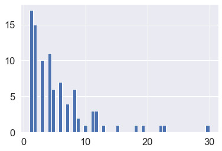
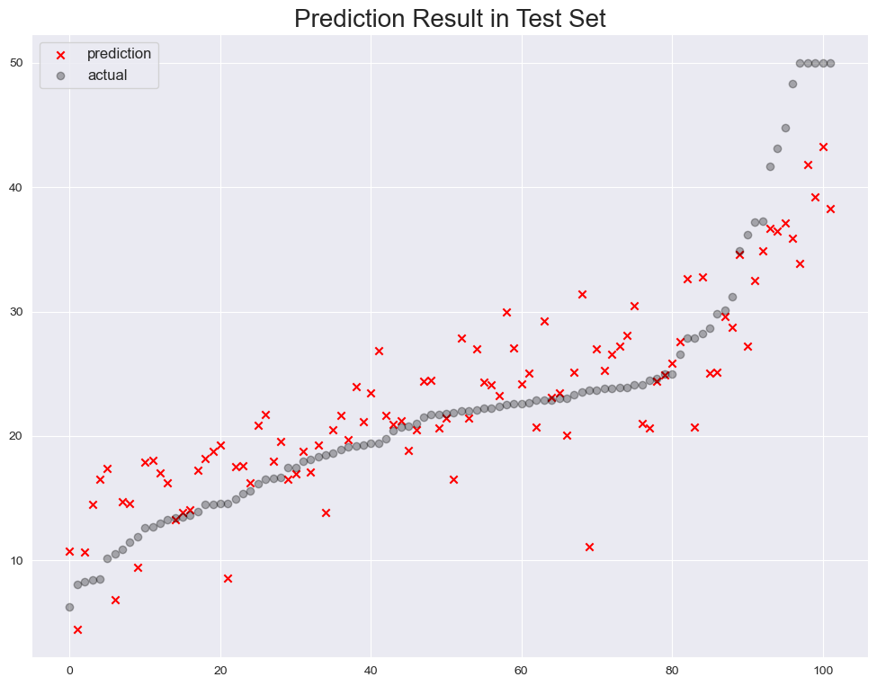

import pandas as pd ### 데이터 분석을 하기 위한 파이썬 라이브러리 such as a table
import numpy as np ### 수치해석 라이브러리
import matplotlib.pyplot as plt ### 그래프 그리는 라이브러리
import seaborn as sns ### 그래프 그리는 라이브러리
%matplotlib inline
### 출력을 jupyter lab으로
#import warnings
#warnings.filterwarnings("ignore", category=FutureWarning)
#warnings.filterwarnings("ignore", category=DeprecationWarning)Minseo Park KAIST @ 2023 Fall Class
Regression 실습 : 집값 예측하기
미국 매사추세츠주의 주택 가격 데이터(Boston Housing 1970)를 활용해 지역의 평균 주택 가격을 예측하는 선형 회귀 모델을 학습한다.
이를 기초로 하여 주택 가격의 영향 요소 파악 및 주택 가격 예측을 진행할 수 있다.
- Library & Data Import
- 데이터 파악 (EDA: 탐색적 데이터 분석) 2-1. 데이터셋 기본 정보 파악 2-2. 종속 변수(목표 변수) 탐색 2-3. 설명 변수 탐색 2-4. 설명변수와 종속변수 간의 관계 탐색
- 주택 가격 예측 모델링: 회귀 분석 3-1. 데이터 전처리 3-2. 회귀 모델링 3-3. 모델 해석 3-4. 모델 예측 결과 및 성능 평가
1. Import Libraries & Data Set
Import Boston Housing Dataset
- 분석에 사용될 데이터셋은 Boston Housing 데이터의 일부 변수를 추출한 데이터입니다.
- 미국 매사추세츠주 92개 도시(TOWN)의 506개 지역의 주택 가격 및 기타 지역 특성 데이터가 포함되어 있습니다. (Dataset Introduction)
df=pd.read_csv("./BostonHouse/BostonHousing2.csv")2. EDA (Exploratory Data Analysis)
#데이터셋을 불러와서 첫 세 줄을 출력하여 데이터의 구성을 한 번 살펴볼게요.
df.tail(10)
#df.tail(3)| TOWN | LON | LAT | CMEDV | CRIM | ZN | INDUS | CHAS | NOX | RM | AGE | DIS | RAD | TAX | PTRATIO | B | LSTAT | |
|---|---|---|---|---|---|---|---|---|---|---|---|---|---|---|---|---|---|
| 496 | Revere | -71.0010 | 42.2525 | 19.7 | 0.28960 | 0.0 | 9.69 | 0 | 0.585 | 5.390 | 72.9 | 2.7986 | 6 | 391 | 19.2 | 396.90 | 21.14 |
| 497 | Revere | -70.9947 | 42.2496 | 18.3 | 0.26838 | 0.0 | 9.69 | 0 | 0.585 | 5.794 | 70.6 | 2.8927 | 6 | 391 | 19.2 | 396.90 | 14.10 |
| 498 | Revere | -71.0050 | 42.2455 | 21.2 | 0.23912 | 0.0 | 9.69 | 0 | 0.585 | 6.019 | 65.3 | 2.4091 | 6 | 391 | 19.2 | 396.90 | 12.92 |
| 499 | Revere | -70.9985 | 42.2430 | 17.5 | 0.17783 | 0.0 | 9.69 | 0 | 0.585 | 5.569 | 73.5 | 2.3999 | 6 | 391 | 19.2 | 395.77 | 15.10 |
| 500 | Revere | -70.9920 | 42.2380 | 16.8 | 0.22438 | 0.0 | 9.69 | 0 | 0.585 | 6.027 | 79.7 | 2.4982 | 6 | 391 | 19.2 | 396.90 | 14.33 |
| 501 | Winthrop | -70.9860 | 42.2312 | 22.4 | 0.06263 | 0.0 | 11.93 | 0 | 0.573 | 6.593 | 69.1 | 2.4786 | 1 | 273 | 21.0 | 391.99 | 9.67 |
| 502 | Winthrop | -70.9910 | 42.2275 | 20.6 | 0.04527 | 0.0 | 11.93 | 0 | 0.573 | 6.120 | 76.7 | 2.2875 | 1 | 273 | 21.0 | 396.90 | 9.08 |
| 503 | Winthrop | -70.9948 | 42.2260 | 23.9 | 0.06076 | 0.0 | 11.93 | 0 | 0.573 | 6.976 | 91.0 | 2.1675 | 1 | 273 | 21.0 | 396.90 | 5.64 |
| 504 | Winthrop | -70.9875 | 42.2240 | 22.0 | 0.10959 | 0.0 | 11.93 | 0 | 0.573 | 6.794 | 89.3 | 2.3889 | 1 | 273 | 21.0 | 393.45 | 6.48 |
| 505 | Winthrop | -70.9825 | 42.2210 | 19.0 | 0.04741 | 0.0 | 11.93 | 0 | 0.573 | 6.030 | 80.8 | 2.5050 | 1 | 273 | 21.0 | 396.90 | 7.88 |
2-1 : 데이터 셋 기본 정보 파악
Features Descriptions
- TOWN: 소속 도시 이름
- LON, LAT: 해당 지역의 경도(Longitudes) 위도(Latitudes) 정보
- CMEDV: 해당 지역의 주택 가격 (중앙값) (corrected median values of housing)(단위 USD 1000)
- CRIM: 지역 범죄율 (per capita crime)
- ZN: 소속 도시에 25,000 제곱 피트(sq.ft) 이상의 주택지 비율
- INDUS: 소속 도시에 상업적 비즈니스에 활용되지 않는 농지 면적
- CHAS: 해당 지역이 Charles 강과 접하고 있는지 여부 (dummy variable)
- NOX: 소속 도시의 산화질소 농도
- RM: 해당 지역의 자택당 평균 방 갯수
- AGE: 해당 지역에 1940년 이전에 건설된 주택의 비율
- DIS: 5개의 보스턴 고용 센터와의 거리에 따른 가중치 부여
- RAD: 소속 도시가 Radial 고속도로와의 접근성 지수
- TAX: 소속 도시의 10000달러당 재산세
- PTRATIO: 소속 도시의 학생-교사 비율
- B: 해당 지역의 흑인 지수 (1000(Bk - 0.63)^2), Bk는 흑인의 비
- LSTAT: 해당 지역의 빈곤층 비율
데이터의 각 변수(features, attributes, columns, x들)의 기본 정보 및 각 변수의 특성을 살펴보겠습니다.
### 그래프의 배경 설정 : sns --> seaborn 라이브러리 이용
sns.set_style('darkgrid')- 데이터 셋의 기본 정보 파악하기
### 데이터 셋 구조 보기
df.shape
### 해석: 행이 506, 집이 506개, 열이 17, 집값을 예측하는데 사용한 변수가 17개라고 생각하시면 됩니다. (506, 17)### 결측치 : 비어있는 데이터를 찾습니다.
### 여기서는 어떤 컬럼(변수, 특성, x)에 결측치가 많은지 봅니다.
df.isnull().sum()TOWN 0
LON 0
LAT 0
CMEDV 0
CRIM 0
ZN 0
INDUS 0
CHAS 0
NOX 0
RM 0
AGE 0
DIS 0
RAD 0
TAX 0
PTRATIO 0
B 0
LSTAT 0
dtype: int64#### 해석) 다행입니다. 506개의 관측치(observations, 집들)에서, 17개의 변수(variable, features, columns, x)에 결측치가 없습니다.
### 만약 결측치가 있다면, 결측치를 처리해야 됩니다. 이것을 전처리라고 합니다.### data type을 확인합니다.
df.info()<class 'pandas.core.frame.DataFrame'>
RangeIndex: 506 entries, 0 to 505
Data columns (total 17 columns):
# Column Non-Null Count Dtype
--- ------ -------------- -----
0 TOWN 506 non-null object
1 LON 506 non-null float64
2 LAT 506 non-null float64
3 CMEDV 506 non-null float64
4 CRIM 506 non-null float64
5 ZN 506 non-null float64
6 INDUS 506 non-null float64
7 CHAS 506 non-null int64
8 NOX 506 non-null float64
9 RM 506 non-null float64
10 AGE 506 non-null float64
11 DIS 506 non-null float64
12 RAD 506 non-null int64
13 TAX 506 non-null int64
14 PTRATIO 506 non-null float64
15 B 506 non-null float64
16 LSTAT 506 non-null float64
dtypes: float64(13), int64(3), object(1)
memory usage: 67.3+ KB### 해셕)Town(소속도시이름)만 문자형 변수(범주형 변수)이고, 이를 제외한 모든 변수는 숫자형입니다.### 슷지형 변수만 뽑아서 기본 통계를 해 봅니다.
df.describe()| LON | LAT | CMEDV | CRIM | ZN | INDUS | CHAS | NOX | RM | AGE | DIS | RAD | TAX | PTRATIO | B | LSTAT | |
|---|---|---|---|---|---|---|---|---|---|---|---|---|---|---|---|---|
| count | 506.000000 | 506.000000 | 506.000000 | 506.000000 | 506.000000 | 506.000000 | 506.000000 | 506.000000 | 506.000000 | 506.000000 | 506.000000 | 506.000000 | 506.000000 | 506.000000 | 506.000000 | 506.000000 |
| mean | -71.056389 | 42.216440 | 22.528854 | 3.613524 | 11.363636 | 11.136779 | 0.069170 | 0.554695 | 6.284634 | 68.574901 | 3.795043 | 9.549407 | 408.237154 | 18.455534 | 356.674032 | 12.653063 |
| std | 0.075405 | 0.061777 | 9.182176 | 8.601545 | 23.322453 | 6.860353 | 0.253994 | 0.115878 | 0.702617 | 28.148861 | 2.105710 | 8.707259 | 168.537116 | 2.164946 | 91.294864 | 7.141062 |
| min | -71.289500 | 42.030000 | 5.000000 | 0.006320 | 0.000000 | 0.460000 | 0.000000 | 0.385000 | 3.561000 | 2.900000 | 1.129600 | 1.000000 | 187.000000 | 12.600000 | 0.320000 | 1.730000 |
| 25% | -71.093225 | 42.180775 | 17.025000 | 0.082045 | 0.000000 | 5.190000 | 0.000000 | 0.449000 | 5.885500 | 45.025000 | 2.100175 | 4.000000 | 279.000000 | 17.400000 | 375.377500 | 6.950000 |
| 50% | -71.052900 | 42.218100 | 21.200000 | 0.256510 | 0.000000 | 9.690000 | 0.000000 | 0.538000 | 6.208500 | 77.500000 | 3.207450 | 5.000000 | 330.000000 | 19.050000 | 391.440000 | 11.360000 |
| 75% | -71.019625 | 42.252250 | 25.000000 | 3.677083 | 12.500000 | 18.100000 | 0.000000 | 0.624000 | 6.623500 | 94.075000 | 5.188425 | 24.000000 | 666.000000 | 20.200000 | 396.225000 | 16.955000 |
| max | -70.810000 | 42.381000 | 50.000000 | 88.976200 | 100.000000 | 27.740000 | 1.000000 | 0.871000 | 8.780000 | 100.000000 | 12.126500 | 24.000000 | 711.000000 | 22.000000 | 396.900000 | 37.970000 |
### 범주형 변수(Categorical Variables): 문자열 변수
### 타운의 수, 소속도시의 수를 구합니다.
### .unique()는 중복을 제거 하는 것입니다.
### 2명이 노원구에 산다고, 노원구가 2개 되면 안되겠죠?:-) 노원구는 1개니까요. :-)
num_town=df['TOWN'].unique()
print(len(num_town))
num_town92array(['Nahant', 'Swampscott', 'Marblehead', 'Salem', 'Lynn', 'Sargus',
'Lynnfield', 'Peabody', 'Danvers', 'Middleton', 'Topsfield',
'Hamilton', 'Wenham', 'Beverly', 'Manchester', 'North Reading',
'Wilmington', 'Burlington', 'Woburn', 'Reading', 'Wakefield',
'Melrose', 'Stoneham', 'Winchester', 'Medford', 'Malden',
'Everett', 'Somerville', 'Cambridge', 'Arlington', 'Belmont',
'Lexington', 'Bedford', 'Lincoln', 'Concord', 'Sudbury', 'Wayland',
'Weston', 'Waltham', 'Watertown', 'Newton', 'Natick', 'Framingham',
'Ashland', 'Sherborn', 'Brookline', 'Dedham', 'Needham',
'Wellesley', 'Dover', 'Medfield', 'Millis', 'Norfolk', 'Walpole',
'Westwood', 'Norwood', 'Sharon', 'Canton', 'Milton', 'Quincy',
'Braintree', 'Randolph', 'Holbrook', 'Weymouth', 'Cohasset',
'Hull', 'Hingham', 'Rockland', 'Hanover', 'Norwell', 'Scituate',
'Marshfield', 'Duxbury', 'Pembroke', 'Boston Allston-Brighton',
'Boston Back Bay', 'Boston Beacon Hill', 'Boston North End',
'Boston Charlestown', 'Boston East Boston', 'Boston South Boston',
'Boston Downtown', 'Boston Roxbury', 'Boston Savin Hill',
'Boston Dorchester', 'Boston Mattapan', 'Boston Forest Hills',
'Boston West Roxbury', 'Boston Hyde Park', 'Chelsea', 'Revere',
'Winthrop'], dtype=object)2-2 종속변수(타겟변수, y)의 탐색
- CMEDV : 주택가격이 타겟변수가 됩니다. 왜냐면, 저희는 주택의 가격을 맞추기 위하이기 때문입니다.
- matplot 참고 사이트:
- https://codetorial.net/matplotlib/basic_plot.html
- https://matplotlib.org/stable/gallery/index.html### 기초 통계량을 다시 살펴봅니다.
df['CMEDV'].describe()count 506.000000
mean 22.528854
std 9.182176
min 5.000000
25% 17.025000
50% 21.200000
75% 25.000000
max 50.000000
Name: CMEDV, dtype: float64### 시각화를 해서 살펴봅니다.
### 데이터의 분포를 파악할때, 시각화각 가장 좋은 방법 중 한개 입니다.
### .hist(): 히스토그램을 의미합니다. bins=50:주머니가 50개 이다. x가 50개로 나누어 진다라고 이해하셔도 좋습니다.
### y축은 frequency 빈도수입니다. x 축은 실제 주택 값입니다.
## $50,000 근처의 집도 16~17개는 된다??
df['CMEDV'].hist()<Axes: >### 분포를 보는 또 다른 시각화 방법이 있습니다. 여러가지로 찍어 보겠습니다.
### 첫번째 :boxplot 입니다.
plt.boxplot(df['CMEDV'])
plt.show()### 해석) $17,000~$25000 사이에 분포되어 있고, $40,000 이상인 고가 주택도 존재합니다.### numerical features(except "LON" & "LAT") : LON, LAT: 해당 지역의 경도(Longitudes) 위도(Latitudes) 정보
numerical_columns=['CRIM', 'ZN', 'INDUS', 'CHAS', 'NOX', 'RM', 'AGE', 'DIS', 'RAD', 'TAX', 'PTRATIO', 'B', 'LSTAT']
### figsize()는 plot()의 기본 크기를 지정합니다.
fig = plt.figure(figsize = (16, 20))
ax = fig.gca() # Axes 생성
### gca()
### gca()로 현재의 Axes를 할당한다.
### ax=plt.gica(): 축의 위치를 호출하여 ax로 설정(축 위치 변경을 위해 필요한 과정)
df[numerical_columns].hist(ax=ax)
plt.show()UserWarning: To output multiple subplots, the figure containing the passed axes is being cleared
df[numerical_columns].hist(ax=ax)2-3 설명변수(독립변수, features, attributes, x) 살펴보기
## AttributeError: 'SubplotSpec' object has no attribute 'is_first_col'## ! pip install --upgrade matplotlib### numerical features(except "LON" & "LAT") : LON, LAT: 해당 지역의 경도(Longitudes) 위도(Latitudes) 정보
numerical_columns=['CRIM', 'ZN', 'INDUS', 'CHAS', 'NOX', 'RM', 'AGE', 'DIS', 'RAD', 'TAX', 'PTRATIO', 'B', 'LSTAT']
### figsize()는 plot()의 기본 크기를 지정합니다.
fig = plt.figure(figsize = (16, 20))
ax = fig.gca() # Axes 생성
### gca()
### gca()로 현재의 Axes를 할당한다.
### ax=plt.gica(): 축의 위치를 호출하여 ax로 설정(축 위치 변경을 위해 필요한 과정)
df[numerical_columns].hist(ax=ax)
plt.show()UserWarning: To output multiple subplots, the figure containing the passed axes is being cleared
df[numerical_columns].hist(ax=ax)
2-4. 설명변수(x) 와 종속변수(y) 간의 관계 탐색
- 변수간의 상관관계 파악해 봅니다.
### Person 상관계수 : 대표적으로 상관관계 분석시 사용하는 지표입니다.
### -1 에서 1 사이의 값을 가진다는 특징이 있습니다.
### 1일 때는 완전 양의 상관(perfect positive correlation), -1일 때는 완전 음의 상관관계(perfect negative correlation)관계를 보입니다.
### https://m.blog.naver.com/istech7/50153047118
cols = ['CMEDV', 'CRIM', 'ZN', 'INDUS', 'CHAS', 'NOX', 'RM', 'AGE', 'DIS', 'RAD', 'TAX', 'PTRATIO', 'B', 'LSTAT']
corr = df[cols].corr(method = 'pearson')
corr| CMEDV | CRIM | ZN | INDUS | CHAS | NOX | RM | AGE | DIS | RAD | TAX | PTRATIO | B | LSTAT | |
|---|---|---|---|---|---|---|---|---|---|---|---|---|---|---|
| CMEDV | 1.000000 | -0.389582 | 0.360386 | -0.484754 | 0.175663 | -0.429300 | 0.696304 | -0.377999 | 0.249315 | -0.384766 | -0.471979 | -0.505655 | 0.334861 | -0.740836 |
| CRIM | -0.389582 | 1.000000 | -0.200469 | 0.406583 | -0.055892 | 0.420972 | -0.219247 | 0.352734 | -0.379670 | 0.625505 | 0.582764 | 0.289946 | -0.385064 | 0.455621 |
| ZN | 0.360386 | -0.200469 | 1.000000 | -0.533828 | -0.042697 | -0.516604 | 0.311991 | -0.569537 | 0.664408 | -0.311948 | -0.314563 | -0.391679 | 0.175520 | -0.412995 |
| INDUS | -0.484754 | 0.406583 | -0.533828 | 1.000000 | 0.062938 | 0.763651 | -0.391676 | 0.644779 | -0.708027 | 0.595129 | 0.720760 | 0.383248 | -0.356977 | 0.603800 |
| CHAS | 0.175663 | -0.055892 | -0.042697 | 0.062938 | 1.000000 | 0.091203 | 0.091251 | 0.086518 | -0.099176 | -0.007368 | -0.035587 | -0.121515 | 0.048788 | -0.053929 |
| NOX | -0.429300 | 0.420972 | -0.516604 | 0.763651 | 0.091203 | 1.000000 | -0.302188 | 0.731470 | -0.769230 | 0.611441 | 0.668023 | 0.188933 | -0.380051 | 0.590879 |
| RM | 0.696304 | -0.219247 | 0.311991 | -0.391676 | 0.091251 | -0.302188 | 1.000000 | -0.240265 | 0.205246 | -0.209847 | -0.292048 | -0.355501 | 0.128069 | -0.613808 |
| AGE | -0.377999 | 0.352734 | -0.569537 | 0.644779 | 0.086518 | 0.731470 | -0.240265 | 1.000000 | -0.747881 | 0.456022 | 0.506456 | 0.261515 | -0.273534 | 0.602339 |
| DIS | 0.249315 | -0.379670 | 0.664408 | -0.708027 | -0.099176 | -0.769230 | 0.205246 | -0.747881 | 1.000000 | -0.494588 | -0.534432 | -0.232471 | 0.291512 | -0.496996 |
| RAD | -0.384766 | 0.625505 | -0.311948 | 0.595129 | -0.007368 | 0.611441 | -0.209847 | 0.456022 | -0.494588 | 1.000000 | 0.910228 | 0.464741 | -0.444413 | 0.488676 |
| TAX | -0.471979 | 0.582764 | -0.314563 | 0.720760 | -0.035587 | 0.668023 | -0.292048 | 0.506456 | -0.534432 | 0.910228 | 1.000000 | 0.460853 | -0.441808 | 0.543993 |
| PTRATIO | -0.505655 | 0.289946 | -0.391679 | 0.383248 | -0.121515 | 0.188933 | -0.355501 | 0.261515 | -0.232471 | 0.464741 | 0.460853 | 1.000000 | -0.177383 | 0.374044 |
| B | 0.334861 | -0.385064 | 0.175520 | -0.356977 | 0.048788 | -0.380051 | 0.128069 | -0.273534 | 0.291512 | -0.444413 | -0.441808 | -0.177383 | 1.000000 | -0.366087 |
| LSTAT | -0.740836 | 0.455621 | -0.412995 | 0.603800 | -0.053929 | 0.590879 | -0.613808 | 0.602339 | -0.496996 | 0.488676 | 0.543993 | 0.374044 | -0.366087 | 1.000000 |
### 상관관계를 직관적으로 살펴보기 위해 Heatmap 으로 돌려봅니다.
### heatmap (seaborn): 여기서는 seaborn 시각화 라이브러리를 사용해서 표현합니다.
### 시각화의 대표적인 라이브러리가 matplot(https://matplotlib.org/)과 seaborn(https://seaborn.pydata.org/)이 있습니다.
fig = plt.figure(figsize = (16, 12))
ax = fig.gca()
# https://seaborn.pydata.org/generated/seaborn.heatmap.html
sns.set(font_scale = 1.5) # heatmap 안의 font-size 설정
heatmap = sns.heatmap(corr.values, annot = True, fmt='.2f', annot_kws={'size':15},
yticklabels = cols, xticklabels = cols, ax=ax, cmap = "RdYlBu")
plt.tight_layout()
plt.show()### 해설)
### 우리의 관심사인 target variable **“CMEDV - 주택 가격”**과 다른 변수간의 상관관계를 살펴보면,
### “CMEDV - 주택 가격”
### “RM - 자택당 평균 방 갯수”(0.7) (양의 상관관계)
### “LSTAT - 빈곤층의 비율”(-0.74) (음의 상관관게)
## 과 강한 상관관계를 보이고 있다는 것을 알 수 있습니다.2.4.1 CMEDV - 주택 가격~ 방 갯수(“RM”)의 관계
### scatter plot 산점도, https://seaborn.pydata.org/generated/seaborn.scatterplot.html
sns.scatterplot(data=df, x='RM', y='CMEDV', markers='o', color='blue', alpha=0.6)
plt.title('Scatter Plot')
plt.show()### 해설)
### 주택 가격이 방 갯수와 양의 상관관계(positive correlation)를 갖고 있습니다.
### 즉, 방 갯수가 많은 주택들이 상대적으로 더 높은 가격을 갖고 있습니다.2.4.2 CMEDV - 빈곤층의 비율(“LSTAT”)의 관계
# scatter plot
sns.scatterplot(data=df, x='LSTAT', y='CMEDV', markers='o', color='blue', alpha=0.6)
plt.title('Scatter Plot')
plt.show()### 해설)
### 주택 가격이 빈곤층의 비율과 음의 상관관계(negative correlation)를 갖고 있습니다.
### 즉, 빈곤층의 비율이 높은 지역의 주택 가격이 상대적으로 낮은 경향이 있습니다.2.4.3 도시별 차이 탐색
- 데이터를 살펴보면 여러 지역이 같은 도시에 속한 경우가 있습니다.
- 변수 중에서도 도시 단위로 측정되는 변수가 많고요. 따라서 우리는 자연스럽게 도시 간의 차이를 궁금하게 됩니다.
- 다시한번 변수의 설명을 열거해 봅니다.
- TOWN: 소속 도시 이름
- LON, LAT: 해당 지역의 경도(Longitudes) 위도(Latitudes) 정보
- CMEDV: 해당 지역의 주택 가격 (중앙값) (corrected median values of housing)(단위: USD 1000)
- CRIM: 지역 범죄율 (per capita crime)
- ZN: 소속 도시에 25,000 제곱 피트(sq.ft) 이상의 주택지 비율
- INDUS: 소속 도시에 상업적 비즈니스에 활용되지 않는 농지 면적
- CHAS: 해당 지역이 Charles 강과 접하고 있는지 여부 (dummy variable)
- NOX: 소속 도시의 산화질소 농도
- RM: 해당 지역의 자택당 평균 방 갯수
- AGE: 해당 지역에 1940년 이전에 건설된 주택의 비율
- DIS: 5개의 보스턴 고용 센터와의 거리에 따른 가중치 부여
- RAD: 소속 도시가 Radial 고속도로와의 접근성 지수
- TAX: 소속 도시의 10000달러당 재산세
- PTRATIO: 소속 도시의 학생-교사 비율
- B: 해당 지역의 흑인 지수 (1000(Bk - 0.63)^2), Bk는 흑인의 비
- LSTAT: 해당 지역의 빈곤층 비율
### 각 도시 데이터 갯수 살펴보기
df['TOWN'].value_counts()Cambridge 30
Boston Savin Hill 23
Lynn 22
Boston Roxbury 19
Newton 18
..
Medfield 1
Dover 1
Lincoln 1
Sherborn 1
Nahant 1
Name: TOWN, Length: 92, dtype: int64### 해설) 도시 갯수가 92개 입니다.### 각 도시 데이터 갯수 살펴보기 (bar plot)을 활용해서 시각화를 합니다.
### 위의 각 도시 데이터 갯수를 x 축으로, 합니다.
### x 축을 50개로 나누었습니다.
df['TOWN'].value_counts().hist(bins=50)<Axes: >
### 도시별 주택 가격 특징 (boxplot 이용)
fig = plt.figure(figsize = (12, 20))
sns.boxplot(x='CMEDV', y='TOWN', data=df)<Axes: xlabel='CMEDV', ylabel='TOWN'>### 해설) Boston 지역(Boston으로 시작하는 도시)의 주택 가격이 전반적으로 다른 지역보다 낮다는 것을 알 수 있습니다.### 도시별 범죄율을 확인해 보겠습니다.
### 도시별 범죄율 특징
fig = plt.figure(figsize = (12, 20))
sns.boxplot(x='CRIM', y='TOWN', data=df)### 해설) Boston 지역의 범죄율이 유독 높다는 것을 확인할 수 있고, 따라서 범죄율이 높은 지역의 주택 가격이 상대적으로 낮다는 것을 추측해볼 수 있겠습니다.1. Library & Data Import
2. 데이터 파악 (EDA: 탐색적 데이터 분석)
2-1. 데이터셋 기본 정보 파악
2-2. 종속 변수(목표 변수) 탐색
2-3. 설명 변수 탐색
2-4. 설명변수와 종속변수 간의 관계 탐색
3. 주택 가격 예측 모델링: 회귀 분석
3-1. 데이터 전처리
3-2. 회귀 모델링
3-3. 모델 해석
3-4. 모델 예측 결과 및 성능 평가3. 주택가격 예측 모델링: 회귀분석
- 이제 변수들을 활용하여 매사추세츠주 각 지역의 주택 가격을 예측하는 회귀 모델을 만들어 보겠습니다.
3-1 데이터 전처리
- 먼저 Feature 들의 scale 차이를 없애기 위해 수치형 Feature에 대해서 표준화를 진행해야 합니다.
df.head()데이터를 살펴보면 여러 지역이 같은 도시에 속한 경우가 있습니다.
변수 중에서도 도시 단위로 측정되는 변수가 많고요. 따라서 우리는 자연스럽게 도시 간의 차이를 궁금하게 됩니다.
다시한번 변수의 설명을 열거해 봅니다.
- TOWN: 소속 도시 이름
- LON, LAT: 해당 지역의 경도(Longitudes) 위도(Latitudes) 정보
- CMEDV: 해당 지역의 주택 가격 (중앙값) (corrected median values of housing)(단위: USD 1000)
- CRIM: 지역 범죄율 (per capita crime)
- ZN: 소속 도시에 25,000 제곱 피트(sq.ft) 이상의 주택지 비율
- INDUS: 소속 도시에 상업적 비즈니스에 활용되지 않는 농지 면적
- CHAS: 해당 지역이 Charles 강과 접하고 있는지 여부 (dummy variable)
- NOX: 소속 도시의 산화질소 농도
- RM: 해당 지역의 자택당 평균 방 갯수
- AGE: 해당 지역에 1940년 이전에 건설된 주택의 비율
- DIS: 5개의 보스턴 고용 센터와의 거리에 따른 가중치 부여
- RAD: 소속 도시가 Radial 고속도로와의 접근성 지수
- TAX: 소속 도시의 10000달러당 재산세
- PTRATIO: 소속 도시의 학생-교사 비율
- B: 해당 지역의 흑인 지수 (1000(Bk - 0.63)^2), Bk는 흑인의 비
- LSTAT: 해당 지역의 빈곤층 비율
df.info()### 문자형 변수인 "TOWN"와 범주형 변수인 “CHAS” (Dummy variable), 위도(LON), 경도(LAT)를 제외하고 모든 수치형 변수에 대해서 표준화를 진행합니다.
### 참고) CHAS: 해당 지역이 Charles 강과 접하고 있는지 여부 (dummy variable)
### 사이킷런은 파이썬에서 머신러닝 분석을 할 때 유용하게 사용할 수 있는 라이브러리입니다. 여러가지 머신러닝 모듈로 구성되어있습니다.
from sklearn.preprocessing import StandardScaler
# feature standardization (numerical_columns except dummy var.-"CHAS")
scaler = StandardScaler() # 평균 0, 표준편차 1
## numerical_columns=['CRIM', 'ZN', 'INDUS', 'CHAS', 'NOX', 'RM', 'AGE', 'DIS', 'RAD', 'TAX', 'PTRATIO', 'B', 'LSTAT']
scale_columns = ['CRIM', 'ZN', 'INDUS', 'NOX', 'RM', 'AGE', 'DIS', 'RAD', 'TAX', 'PTRATIO', 'B', 'LSTAT']
df[scale_columns] = scaler.fit_transform(df[scale_columns])df.head()| TOWN | LON | LAT | CMEDV | CRIM | ZN | INDUS | CHAS | NOX | RM | AGE | DIS | RAD | TAX | PTRATIO | B | LSTAT | |
|---|---|---|---|---|---|---|---|---|---|---|---|---|---|---|---|---|---|
| 0 | Nahant | -70.955 | 42.2550 | 24.0 | -0.419782 | 0.284830 | -1.287909 | 0 | -0.144217 | 0.413672 | -0.120013 | 0.140214 | -0.982843 | -0.666608 | -1.459000 | 0.441052 | -1.075562 |
| 1 | Swampscott | -70.950 | 42.2875 | 21.6 | -0.417339 | -0.487722 | -0.593381 | 0 | -0.740262 | 0.194274 | 0.367166 | 0.557160 | -0.867883 | -0.987329 | -0.303094 | 0.441052 | -0.492439 |
| 2 | Swampscott | -70.936 | 42.2830 | 34.7 | -0.417342 | -0.487722 | -0.593381 | 0 | -0.740262 | 1.282714 | -0.265812 | 0.557160 | -0.867883 | -0.987329 | -0.303094 | 0.396427 | -1.208727 |
| 3 | Marblehead | -70.928 | 42.2930 | 33.4 | -0.416750 | -0.487722 | -1.306878 | 0 | -0.835284 | 1.016303 | -0.809889 | 1.077737 | -0.752922 | -1.106115 | 0.113032 | 0.416163 | -1.361517 |
| 4 | Marblehead | -70.922 | 42.2980 | 36.2 | -0.412482 | -0.487722 | -1.306878 | 0 | -0.835284 | 1.228577 | -0.511180 | 1.077737 | -0.752922 | -1.106115 | 0.113032 | 0.441052 | -1.026501 |
df[scale_columns].head()| CRIM | ZN | INDUS | NOX | RM | AGE | DIS | RAD | TAX | PTRATIO | B | LSTAT | |
|---|---|---|---|---|---|---|---|---|---|---|---|---|
| 0 | -0.419782 | 0.284830 | -1.287909 | -0.144217 | 0.413672 | -0.120013 | 0.140214 | -0.982843 | -0.666608 | -1.459000 | 0.441052 | -1.075562 |
| 1 | -0.417339 | -0.487722 | -0.593381 | -0.740262 | 0.194274 | 0.367166 | 0.557160 | -0.867883 | -0.987329 | -0.303094 | 0.441052 | -0.492439 |
| 2 | -0.417342 | -0.487722 | -0.593381 | -0.740262 | 1.282714 | -0.265812 | 0.557160 | -0.867883 | -0.987329 | -0.303094 | 0.396427 | -1.208727 |
| 3 | -0.416750 | -0.487722 | -1.306878 | -0.835284 | 1.016303 | -0.809889 | 1.077737 | -0.752922 | -1.106115 | 0.113032 | 0.416163 | -1.361517 |
| 4 | -0.412482 | -0.487722 | -1.306878 | -0.835284 | 1.228577 | -0.511180 | 1.077737 | -0.752922 | -1.106115 | 0.113032 | 0.441052 | -1.026501 |
- training/test set 나누기
- 나중에 도출될 예측 모델의 예측 성능을 평가하기 위해, 먼저 전체 데이터셋을 “Training set”과 “Test set”으로 나누겠습니다.
- Training set에서 모델을 학습하고 Test set에서 모델의 예측 성능을 검증할 겁니다.
### features for linear regression model
### 참고) CHAS: 해당 지역이 Charles 강과 접하고 있는지 여부 (dummy variable)
### numerical features(except "LON" & "LAT") : LON, LAT: 해당 지역의 경도(Longitudes) 위도(Latitudes) 정보
numerical_columns=['CRIM', 'ZN', 'INDUS', 'CHAS', 'NOX', 'RM', 'AGE', 'DIS', 'RAD', 'TAX', 'PTRATIO', 'B', 'LSTAT']
df[numerical_columns].head()| CRIM | ZN | INDUS | CHAS | NOX | RM | AGE | DIS | RAD | TAX | PTRATIO | B | LSTAT | |
|---|---|---|---|---|---|---|---|---|---|---|---|---|---|
| 0 | -0.419782 | 0.284830 | -1.287909 | 0 | -0.144217 | 0.413672 | -0.120013 | 0.140214 | -0.982843 | -0.666608 | -1.459000 | 0.441052 | -1.075562 |
| 1 | -0.417339 | -0.487722 | -0.593381 | 0 | -0.740262 | 0.194274 | 0.367166 | 0.557160 | -0.867883 | -0.987329 | -0.303094 | 0.441052 | -0.492439 |
| 2 | -0.417342 | -0.487722 | -0.593381 | 0 | -0.740262 | 1.282714 | -0.265812 | 0.557160 | -0.867883 | -0.987329 | -0.303094 | 0.396427 | -1.208727 |
| 3 | -0.416750 | -0.487722 | -1.306878 | 0 | -0.835284 | 1.016303 | -0.809889 | 1.077737 | -0.752922 | -1.106115 | 0.113032 | 0.416163 | -1.361517 |
| 4 | -0.412482 | -0.487722 | -1.306878 | 0 | -0.835284 | 1.228577 | -0.511180 | 1.077737 | -0.752922 | -1.106115 | 0.113032 | 0.441052 | -1.026501 |
from sklearn.model_selection import train_test_split
# split dataset into training & test
X = df[numerical_columns]
y = df['CMEDV']
X_train, X_test, y_train, y_test = train_test_split(X, y, test_size=0.2, random_state=1)X_train.shape, y_train.shape((404, 13), (404,))X_test.shape, y_test.shape((102, 13), (102,))y_train
### CMEDV 값을 의미합니다.42 25.3
58 23.3
385 7.2
78 21.2
424 11.7
...
255 20.9
72 22.8
396 12.5
235 24.0
37 21.0
Name: CMEDV, Length: 404, dtype: float64X_train| CRIM | ZN | INDUS | CHAS | NOX | RM | AGE | DIS | RAD | TAX | PTRATIO | B | LSTAT | |
|---|---|---|---|---|---|---|---|---|---|---|---|---|---|
| 42 | -0.404051 | -0.487722 | -0.616727 | 0 | -0.921667 | -0.164740 | -2.203863 | 0.915493 | -0.752922 | -1.040783 | -0.256858 | 0.292704 | -0.959218 |
| 58 | -0.402544 | 0.585267 | -0.876445 | 0 | -0.878475 | -0.198931 | -1.400194 | 1.910869 | -0.178120 | -0.737880 | 0.575395 | 0.372854 | -0.812036 |
| 385 | 1.535926 | -0.487722 | 1.015999 | 0 | 1.255192 | -1.435535 | 1.049929 | -1.126122 | 1.661245 | 1.530926 | 0.806576 | 0.441052 | 2.545127 |
| 78 | -0.413947 | -0.487722 | 0.247057 | 0 | -1.016689 | -0.074986 | -0.528960 | 0.579502 | -0.523001 | -0.060801 | 0.113032 | 0.325926 | -0.043883 |
| 424 | 0.602650 | -0.487722 | 1.015999 | 0 | 0.253146 | -1.025233 | 0.072014 | -0.823122 | 1.661245 | 1.530926 | 0.806576 | -3.870682 | 0.631754 |
| ... | ... | ... | ... | ... | ... | ... | ... | ... | ... | ... | ... | ... | ... |
| 255 | -0.416388 | 2.945843 | -1.093850 | 0 | -1.405414 | -0.582165 | -1.759356 | 2.579000 | -0.982843 | -0.553762 | -0.950402 | 0.422193 | -0.477020 |
| 72 | -0.409853 | -0.487722 | -0.047680 | 0 | -1.224009 | -0.312904 | -2.161190 | 0.709373 | -0.637962 | -0.613155 | 0.344213 | 0.375375 | -0.999868 |
| 396 | 0.262832 | -0.487722 | 1.015999 | 0 | 1.194724 | 0.171480 | 0.975252 | -1.006947 | 1.661245 | 1.530926 | 0.806576 | 0.441052 | 0.941538 |
| 235 | -0.382062 | -0.487722 | -0.720322 | 0 | -0.412006 | -0.282986 | -0.251588 | -0.068046 | -0.178120 | -0.601276 | -0.488039 | 0.220120 | -0.248537 |
| 37 | -0.411191 | -0.487722 | -0.755340 | 0 | -0.481112 | -0.619206 | -0.962799 | 0.066151 | -0.523001 | -0.767576 | 0.344213 | 0.441052 | -0.544304 |
404 rows × 13 columns
다중공산성
- 회귀 분석에서 하나의 feature(예측 변수)가 다른 feature와의 상관 관계가 높으면 (즉, 다중공선성이 존재하면), 회귀 분석 시 부정적인 영향을 미칠 수 있기 때문에, 모델링 하기 전에 먼저 다중공선성의 존재 여부를 확인해야합니다.
- 보통 다중공선성을 판단할 때 VIF값을 확인합니다. 일반적으로, VIF > 10인 feature들은 다른 변수와의 상관관계가 높아, 다중공선성이 존재하는 것으로 판단합니다.
- 즉, VIF > 10인 feature들은 설명변수에서 제거하는 것이 좋을 수도 있습니다.
from statsmodels.stats.outliers_influence import variance_inflation_factor
vif = pd.DataFrame()
vif['features'] = X_train.columns
vif["VIF Factor"] = [variance_inflation_factor(X_train.values, i) for i in range(X_train.shape[1])] ## X_train.shape[1]=13
vif.round(1)
### 소수점 첫째자리까지 표시합니다. 즉, 소수점 둘째짜리에서 반올림 합니다.| features | VIF Factor | |
|---|---|---|
| 0 | CRIM | 1.7 |
| 1 | ZN | 2.5 |
| 2 | INDUS | 3.8 |
| 3 | CHAS | 1.1 |
| 4 | NOX | 4.4 |
| 5 | RM | 1.9 |
| 6 | AGE | 3.2 |
| 7 | DIS | 4.2 |
| 8 | RAD | 8.1 |
| 9 | TAX | 9.8 |
| 10 | PTRATIO | 1.9 |
| 11 | B | 1.4 |
| 12 | LSTAT | 3.0 |
### 해설) VIF값을 확인해보면, 모든 변수의 VIF값이 다 10 이하입니다. 따라서 다중공선성 문제가 존재하지 않아 모든 feature을 활용하여 회귀 모델링을 진행하면 됩니다.3-2 회귀모델링
- 먼저 Training set에서 선형 회귀 예측 모델을 학습합니다.
- 그 다음 도출된 모델을 Test set에 적용해 주택 가격(“CMEDV”)을 예측합니다.
- 이 결과는 실제 “CMEDV” 값과 비교하여 모델의 예측 성능을 평가하는 데 활용하게 됩니다.
from sklearn import linear_model
# fit regression model in training set
lr = linear_model.LinearRegression()
model = lr.fit(X_train, y_train)
# predict in test set
pred_test = lr.predict(X_test)3-3 모델해석하기
- 각 feature, 설명변수, x, 컬럼에 대한 회귀계수를 확인해 보겠습니다.
### print coef
### 계수를 출력합니다.
print(lr.coef_)[-0.9479409 1.39796831 0.14786968 2.13469673 -2.25995614 2.15879342
0.12103297 -3.23121173 2.63662665 -1.95959865 -2.05639351 0.65670428
-3.93702535]### "feature - coefficients" DataFrame 만들기
### zip 키워드는 리스트 2개를 하나로 묶습니다.(결과는 튜플로 됩니다.)
coefs = pd.DataFrame(zip(df[numerical_columns].columns, lr.coef_), columns = ['feature', 'coefficients'])
coefs
### from sklearn.model_selection import train_test_split
### split dataset into training & test
# X = df[numerical_columns]
# y = df['CMEDV']
# X_train, X_test, y_train, y_test = train_test_split(X, y, test_size=0.2, random_state=1)| feature | coefficients | |
|---|---|---|
| 0 | CRIM | -0.947941 |
| 1 | ZN | 1.397968 |
| 2 | INDUS | 0.147870 |
| 3 | CHAS | 2.134697 |
| 4 | NOX | -2.259956 |
| 5 | RM | 2.158793 |
| 6 | AGE | 0.121033 |
| 7 | DIS | -3.231212 |
| 8 | RAD | 2.636627 |
| 9 | TAX | -1.959599 |
| 10 | PTRATIO | -2.056394 |
| 11 | B | 0.656704 |
| 12 | LSTAT | -3.937025 |
### 크기 순서대로 나열합니다.
### 크기 순서로 나열 : 내림차순으로 합니다. 다만 양, 음을 가리지 않습니다. 절대값을 기준으로 합니다.
### 절대값 기준 함수: coefficients.abs().sort_values
coefs_new = coefs.reindex(coefs.coefficients.abs().sort_values(ascending=False).index)
coefs_new| feature | coefficients | |
|---|---|---|
| 12 | LSTAT | -3.937025 |
| 7 | DIS | -3.231212 |
| 8 | RAD | 2.636627 |
| 4 | NOX | -2.259956 |
| 5 | RM | 2.158793 |
| 3 | CHAS | 2.134697 |
| 10 | PTRATIO | -2.056394 |
| 9 | TAX | -1.959599 |
| 1 | ZN | 1.397968 |
| 0 | CRIM | -0.947941 |
| 11 | B | 0.656704 |
| 2 | INDUS | 0.147870 |
| 6 | AGE | 0.121033 |
1. TOWN: 소속 도시 이름
2. LON, LAT: 해당 지역의 경도(Longitudes) 위도(Latitudes) 정보
3. CMEDV: 해당 지역의 주택 가격 (중앙값) (corrected median values of housing)(단위: USD 1000)
4. CRIM: 지역 범죄율 (per capita crime)
5. ZN: 소속 도시에 25,000 제곱 피트(sq.ft) 이상의 주택지 비율
6. INDUS: 소속 도시에 상업적 비즈니스에 활용되지 않는 농지 면적
7. CHAS: 해당 지역이 Charles 강과 접하고 있는지 여부 (dummy variable)
8. NOX: 소속 도시의 산화질소 농도
9. RM: 해당 지역의 자택당 평균 방 갯수
10. AGE: 해당 지역에 1940년 이전에 건설된 주택의 비율
11. DIS: 5개의 보스턴 고용 센터와의 거리에 따른 가중치 부여
12. RAD: 소속 도시가 Radial 고속도로와의 접근성 지수
13. TAX: 소속 도시의 10000달러당 재산세
14. PTRATIO: 소속 도시의 학생-교사 비율
15. B: 해당 지역의 흑인 지수 (1000(Bk - 0.63)^2), Bk는 흑인의 비
16. LSTAT: 해당 지역의 빈곤층 비율### coefficients 를 시각화 합니다.
### figure size
plt.figure(figsize = (8, 8))
### bar plot : matplotlib.pyplot 모듈의 barh() 함수를 사용해서 수평 막대 그래프를 그릴 수 있습니다.
plt.barh(coefs_new['feature'], coefs_new['coefficients'])
plt.title('"feature - coefficient" Graph')
plt.xlabel('coefficients')
plt.ylabel('features')
plt.show()유의성 검정을 합니다 (통계에서 변수가 유의하다는 의미입니다).
X=sm.add_constant(X)
modeling - model = sm.OLS(y,X) - result = model.fit() - print(results.summary())
## https://stackoverflow.com/questions/68463220/pandas-importing-error-importerror-cannot-import-name-dtypearg-from-pandasimport statsmodels.api as sm
X_train2 = sm.add_constant(X_train)
### 회귀분석모형 수식을 간단하게 만들기 위해 다음과 같이 상수항을 독립변수 데이터에 추가하는 것을 상수항 결합(bias augmentation)작업이라고 합니다.
### ordinary least square 의 약자로, 거리의 최소값을 기준으로 구하는 함수입니다.
### 상수항이 추간된 독립변수와 그에 대한 y 값으로 학습을 합니다.
model2 = sm.OLS(y_train, X_train2).fit()
model2.summary()| Dep. Variable: | CMEDV | R-squared: | 0.734 |
|---|---|---|---|
| Model: | OLS | Adj. R-squared: | 0.725 |
| Method: | Least Squares | F-statistic: | 82.86 |
| Date: | Tue, 19 Sep 2023 | Prob (F-statistic): | 1.72e-103 |
| Time: | 21:09:19 | Log-Likelihood: | -1191.9 |
| No. Observations: | 404 | AIC: | 2412. |
| Df Residuals: | 390 | BIC: | 2468. |
| Df Model: | 13 | ||
| Covariance Type: | nonrobust |
| coef | std err | t | P>|t| | [0.025 | 0.975] | |
|---|---|---|---|---|---|---|
| const | 22.4313 | 0.245 | 91.399 | 0.000 | 21.949 | 22.914 |
| CRIM | -0.9479 | 0.290 | -3.263 | 0.001 | -1.519 | -0.377 |
| ZN | 1.3980 | 0.372 | 3.758 | 0.000 | 0.667 | 2.129 |
| INDUS | 0.1479 | 0.458 | 0.323 | 0.747 | -0.753 | 1.049 |
| CHAS | 2.1347 | 0.899 | 2.375 | 0.018 | 0.367 | 3.902 |
| NOX | -2.2600 | 0.490 | -4.617 | 0.000 | -3.222 | -1.298 |
| RM | 2.1588 | 0.332 | 6.495 | 0.000 | 1.505 | 2.812 |
| AGE | 0.1210 | 0.415 | 0.292 | 0.771 | -0.695 | 0.937 |
| DIS | -3.2312 | 0.477 | -6.774 | 0.000 | -4.169 | -2.293 |
| RAD | 2.6366 | 0.671 | 3.931 | 0.000 | 1.318 | 3.955 |
| TAX | -1.9596 | 0.731 | -2.679 | 0.008 | -3.398 | -0.522 |
| PTRATIO | -2.0564 | 0.319 | -6.446 | 0.000 | -2.684 | -1.429 |
| B | 0.6567 | 0.272 | 2.414 | 0.016 | 0.122 | 1.191 |
| LSTAT | -3.9370 | 0.405 | -9.723 | 0.000 | -4.733 | -3.141 |
| Omnibus: | 169.952 | Durbin-Watson: | 1.935 |
|---|---|---|---|
| Prob(Omnibus): | 0.000 | Jarque-Bera (JB): | 859.012 |
| Skew: | 1.762 | Prob(JB): | 2.94e-187 |
| Kurtosis: | 9.213 | Cond. No. | 10.7 |
Notes:
[1] Standard Errors assume that the covariance matrix of the errors is correctly specified.
##!pip install pandas==1.3.0
##!pip install --force-reinstall pandas## https://stackoverflow.com/questions/71106940/cannot-import-name-centered-from-scipy-signal-signaltools##!pip install statsmodels --upgradeimport statsmodels.api as sm
## import scipy.signal.signaltools as sm
X_train2 = sm.add_constant(X_train)
### 회귀분석모형 수식을 간단하게 만들기 위해 다음과 같이 상수항을 독립변수 데이터에 추가하는 것을 상수항 결합(bias augmentation)작업이라고 합니다.
### ordinary least square 의 약자로, 거리의 최소값을 기준으로 구하는 함수입니다.
### 상수항이 추간된 독립변수와 그에 대한 y 값으로 학습을 합니다.
model2 = sm.OLS(y_train, X_train2).fit()
model2.summary()| Dep. Variable: | CMEDV | R-squared: | 0.734 |
|---|---|---|---|
| Model: | OLS | Adj. R-squared: | 0.725 |
| Method: | Least Squares | F-statistic: | 82.86 |
| Date: | Tue, 19 Sep 2023 | Prob (F-statistic): | 1.72e-103 |
| Time: | 21:14:40 | Log-Likelihood: | -1191.9 |
| No. Observations: | 404 | AIC: | 2412. |
| Df Residuals: | 390 | BIC: | 2468. |
| Df Model: | 13 | ||
| Covariance Type: | nonrobust |
| coef | std err | t | P>|t| | [0.025 | 0.975] | |
|---|---|---|---|---|---|---|
| const | 22.4313 | 0.245 | 91.399 | 0.000 | 21.949 | 22.914 |
| CRIM | -0.9479 | 0.290 | -3.263 | 0.001 | -1.519 | -0.377 |
| ZN | 1.3980 | 0.372 | 3.758 | 0.000 | 0.667 | 2.129 |
| INDUS | 0.1479 | 0.458 | 0.323 | 0.747 | -0.753 | 1.049 |
| CHAS | 2.1347 | 0.899 | 2.375 | 0.018 | 0.367 | 3.902 |
| NOX | -2.2600 | 0.490 | -4.617 | 0.000 | -3.222 | -1.298 |
| RM | 2.1588 | 0.332 | 6.495 | 0.000 | 1.505 | 2.812 |
| AGE | 0.1210 | 0.415 | 0.292 | 0.771 | -0.695 | 0.937 |
| DIS | -3.2312 | 0.477 | -6.774 | 0.000 | -4.169 | -2.293 |
| RAD | 2.6366 | 0.671 | 3.931 | 0.000 | 1.318 | 3.955 |
| TAX | -1.9596 | 0.731 | -2.679 | 0.008 | -3.398 | -0.522 |
| PTRATIO | -2.0564 | 0.319 | -6.446 | 0.000 | -2.684 | -1.429 |
| B | 0.6567 | 0.272 | 2.414 | 0.016 | 0.122 | 1.191 |
| LSTAT | -3.9370 | 0.405 | -9.723 | 0.000 | -4.733 | -3.141 |
| Omnibus: | 169.952 | Durbin-Watson: | 1.935 |
|---|---|---|---|
| Prob(Omnibus): | 0.000 | Jarque-Bera (JB): | 859.012 |
| Skew: | 1.762 | Prob(JB): | 2.94e-187 |
| Kurtosis: | 9.213 | Cond. No. | 10.7 |
Notes:
[1] Standard Errors assume that the covariance matrix of the errors is correctly specified.
### 해설) coeff를 봐야 합니다.
### P>|t|를 봐야 합니다. p-value를 의미한다. 0.05 보다 작아야 유의하다!!
### R-squre 를 봐야 합니다. 설명력을 의미합니다.|기억하기|
- 결정 계수 (coefficient of determination)는 추정한 선형 모형이 주어진 자료에 적합한 정도를 재는 척도이다.
- 종속 변수의 변동량 중에서 적용한 모형으로 설명 가능한 부분의 비율을 가리킨다.
- 결정계수의 통상적인 기호는 R²이다.
- 일반적으로 모형의 설명력으로 해석되지만 모형에 설명 변수가 들어갈수록 증가하기 때문에 해석에 주의해야 한다.
- 결정계수의 값은 0에서 1 사이에 있으며, 종속 변인과 독립변인 사이에 상관관계가 높을수록 1에 가까워진다.
- 즉, 결정계수가 0에 가까운 값을 가지는 회귀모형은 유용성이 낮은 반면, 결정계수의 값이 클수록 회귀모형의 유용성이 높다고 할 수 있다.
| 해석하기 |
“INDUS”(상업적 비즈니스에 활용되지 않는 농지 면적: p-value: 0.747)과 “AGE”(1940년 이전에 건설된 비율: p-value:0.771)은 유의하지 않습니다. (p value > 0.05)
주택 가격에 Positive(coefficient > 0)한 영향을 미칩니다.
- “ZN”(25,000 제곱 피트(sq.ft) 이상의 주택지 비율),
- “CHAS”(Charles 강과 접하고 있는지 여부),
- “RM”(자택당 평균 방 갯수),
- “RAD”(소속 도시가 Radial 고속도로와의 접근성 지수),
- “B”(흑인 지수)는
- 다른 변수의 값이 고정했을 때, 해당 변수의 값이 클수록 주택의 가격이 높을 것입니다.
- 주택 가격에 Negative(coefficient < 0)한 영향을 미칩니다.
- “CRIM”(지역 범죄율),
- “NOX”(산화질소 농도),
- “DIS”(보스턴 고용 센터와의 거리),
- “TAX”(재산세),
- “PTRATIO”(학생-교사 비율),
- “LSTAT”(빈곤층 비율)은 :다른 변수의 값이 고정했을 때, 해당 변수의 값이 작을수록 주택의 가격이 높을 것입니다.
3-4 모델 에측 결과 및 성능 평가
- 예측 결과를 가시화 합니다
학습한 모델을 Test set에 적용하여 y값(“CMEDV”)을 예측합니다.
예측 결과를 확인하기 위해 실제값과 예측값을 한 plot에 출력해 시각화해보겠습니다.
from sklearn import linear_model
# fit regression model in training set
lr = linear_model.LinearRegression()
model = lr.fit(X_train, y_train)
# predict in test set
pred_test = lr.predict(X_test)### 예측 결과 시각화 (test set)
df = pd.DataFrame({'actual': y_test, 'prediction': pred_test})
df = df.sort_values(by='actual').reset_index(drop=True)
df.head()
### reset_index() : 아무래도 데이터프레임의 다양한 전처리 과정을 거치게 되면 인덱스가 뒤죽박죽인 경우가 많다. 이럴때 인덱스를 다시 처음부터 재배열 해주는 유용한 함수다.
### drop=True옵션을 주면 기존 인덱스를 버리고 재배열해준다.
### https://yganalyst.github.io/data_handling/Pd_2/| actual | prediction | |
|---|---|---|
| 0 | 6.3 | 10.769593 |
| 1 | 8.1 | 4.473377 |
| 2 | 8.3 | 10.669609 |
| 3 | 8.4 | 14.509258 |
| 4 | 8.5 | 16.522647 |
df.tail(20)| actual | prediction | |
|---|---|---|
| 82 | 27.9 | 32.642201 |
| 83 | 27.9 | 20.686190 |
| 84 | 28.2 | 32.792043 |
| 85 | 28.7 | 25.088598 |
| 86 | 29.8 | 25.100201 |
| 87 | 30.1 | 29.576537 |
| 88 | 31.2 | 28.746416 |
| 89 | 34.9 | 34.560048 |
| 90 | 36.2 | 27.223864 |
| 91 | 37.2 | 32.469474 |
| 92 | 37.3 | 34.878258 |
| 93 | 41.7 | 36.717567 |
| 94 | 43.1 | 36.455461 |
| 95 | 44.8 | 37.130158 |
| 96 | 48.3 | 35.874772 |
| 97 | 50.0 | 33.903719 |
| 98 | 50.0 | 41.788581 |
| 99 | 50.0 | 39.182687 |
| 100 | 50.0 | 43.229771 |
| 101 | 50.0 | 38.246342 |
plt.figure(figsize=(12, 9))
plt.scatter(df.index, df['prediction'], marker='x', color='r')
plt.scatter(df.index, df['actual'], alpha=0.3, marker='o', color='black')
plt.title("Prediction Result in Test Set", fontsize=20)
plt.legend(['prediction', 'actual'], fontsize=12)
plt.show()
### x축은 집 index, y축이 집값
- 모델 성능 평가 (R squre 와 RMSE)
### R square
print(model.score(X_train, y_train)) # training set
print(model.score(X_test, y_test)) # test set0.7341832055169144
0.7639579157366424# RMSE
from sklearn.metrics import mean_squared_error
from math import sqrt
# training set
pred_train = lr.predict(X_train)
print(sqrt(mean_squared_error(y_train, pred_train)))
# test set
print(sqrt(mean_squared_error(y_test, pred_test)))### 해설) Test set에서 해당 예측 모델의 R square가 0.76이고, RMSE가 4.83입니다.